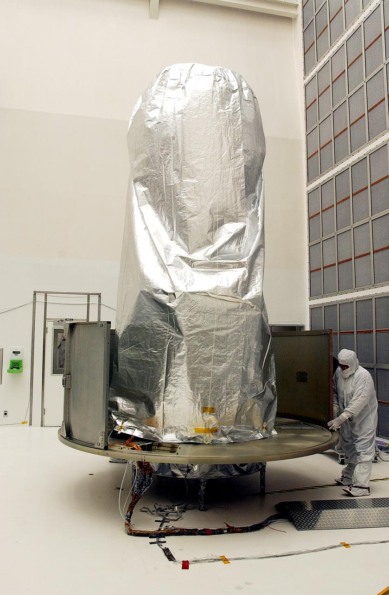
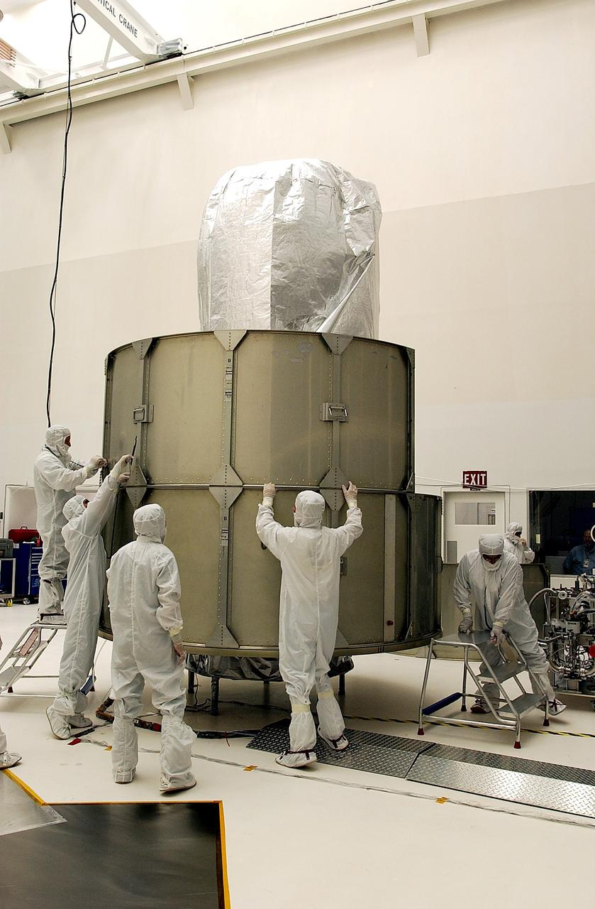

Chłodzenie i radiacyjne odprowadzanie ciepła
Notatka raportu "Orbitalne centra danych". Kluczowe źródła: źródło 1, źródło 2.
W skrócie
Chłodzenie jest najtwardszym fizycznym ograniczeniem orbitalnych centrów danych i jednocześnie miejscem, gdzie najłatwiej o marketingowy mit "w kosmosie jest zimno, więc chłodzenie jest darmowe". W rzeczywistości próżnia jest izolatorem: nie ma powietrza ani wody, więc jedynym sposobem pozbycia się ciepła jest promieniowanie podczerwone w głąb kosmosu, a tempo tego promieniowania rządzi się prawem Stefana-Boltzmanna (moc rośnie z czwartą potęgą temperatury). Praktyczna konsekwencja dla inwestora: aby odprowadzić zaledwie 1 megawat (MW = milion watów) ciepła odpadowego przy temperaturze bezpiecznej dla chipów, trzeba rozłożyć radiator o powierzchni rzędu 1 200 m², czyli wielkości czterech kortów tenisowych (Project Geospatial). Kto na tym zyskuje: dostawcy lekkich, rozkładanych radiatorów i pętli dwufazowych (np. Starcloud, ESA/Thales). Kto traci lub jest narażony na ryzyko: projekty zakładające skalowanie do gigawatów (GW) na bazie samego dziedzictwa ISS, bo największy lotny system chłodzenia (ISS, ~70-126 kW) trzeba przeskalować o 4-5 rzędów wielkości - a takiego demonstratora w skali MW jeszcze nie ma w kosmosie (NIE UJAWNIONE). Tempo zmian jest powolne i napędzane masą wyniesienia: opłacalność zależy od spadku kosztu startu do okolic 500 USD/kg.
Spółki powiązane
Notowane spółki produkujące podzespoły/technologie związane z tym tematem. Pełne omówienie: spółki, dla których nisza to >=33% przychodów; skrótowe: zdywersyfikowane konglomeraty. Zob. też Słownik i Spółki z ekspozycją na giełdy europejskie.
Producenci kluczowi (>=33% przychodów z niszy - omówienie pełne):
- Redwire Corporation (RDW) - Panele ROSA, struktury rozkładane, montaż on-orbit, radiatory Q-Rad
- Vertiv Holdings Co (VRT) - Zasilanie i precyzyjne/cieczowe chłodzenie DC
Pozostali dominujący gracze (nisza to ułamek przychodów - omówienie skrótowe):
- Northrop Grumman Corporation (NOC) - Serwis GEO (MEV/MRV), busy, radiatory, ogniwa
- Airbus SE (AIR) 🇪🇺 - PV (Sparkwing), optyka (Tesat), busy, serwis (EU)
- RTX Corporation (RTX) - ADCS (Blue Canyon), termika (Collins Aerospace)
- Eaton Corporation plc (ETN) - Zasilanie DC (UPS, switchgear) + chłodzenie (Boyd Thermal)
Powiązane wątki
Mapa powiązań tematycznych - jak ten wątek łączy się z resztą raportu.
- Energetyka kosmiczna - każdy wat mocy obliczeniowej trzeba odprowadzić jako ciepło
- Fizyka orbitalna - orientacja radiatorów edge-on do Słońca to zagadnienie operacji
- Promieniowanie i elektronika - rosnące TDP akceleratorów AI napędza wymaganą powierzchnię radiatora
- Niezawodność i serwisowanie - radiatory rozkładane to element niezawodności i serwisu
- Ekonomika i TCO - setki ton radiatora na MW to realny koszt w rachunku startowym
Mechanizm: dlaczego w próżni liczy się tylko promieniowanie
Na Ziemi serwery chłodzi się przez konwekcję - przepływ powietrza lub cieczy zabierający ciepło z gorących powierzchni. W próżni ten mechanizm znika całkowicie. 🔵 Dokumentacja NASA stawia to jednoznacznie: "in a vacuum environment, convection is no longer available and the only mechanism of rejecting heat is radiation" (NASA NTRS). To samo widać na ISS, gdzie podgrzany amoniak krąży przez wielkie radiatory na zewnątrz stacji i oddaje ciepło "by radiation to space" (NASA ISS ATCS).
Tempo wypromieniowania opisuje prawo Stefana-Boltzmanna: emitowana moc na jednostkę powierzchni jest proporcjonalna do czwartej potęgi temperatury bezwzględnej (w kelwinach, K - skala zaczynająca się od zera absolutnego). 🔵 NASA zapisuje je jako E = σT⁴, gdzie stała Stefana-Boltzmanna σ wynosi 5,67 (w jednostkach W·m⁻²·K⁻⁴, czyli wat na metr kwadratowy na kelwin do czwartej potęgi) (NASA NTRS). Dla porządku: dokładna wartość CODATA to 5,670374419×10⁻⁸ W·m⁻²·K⁻⁴ (NIE UJAWNIONE w przeglądanych źródłach NASA, podaną tu jako proxy; źródła NASA cytują zaokrąglone 5,67). Implikacja dla inwestora: kluczowa jest temperatura pracy radiatora - im gorętszy radiator, tym dramatycznie mniejszy i lżejszy może być, więc cała ekonomika chłodzenia orbitalnego zależy od tego, jak wysoką temperaturę chipów i pętli akceptujemy.
Radiator promieniuje głównie w stronę "głębokiego kosmosu", którego średnia temperatura to około 2,7 K (-270°C). 🔵 Tak opisuje to white paper Starcloud (d. Lumen Orbit): "radiating primarily towards deep space, which has an average temperature of about 2.7 Kelvin or -270°C" (Starcloud WP). 🔵 NASA podkreśla zarazem odwrotną stronę medalu: całkowite wypromieniowane ciepło jest proporcjonalne do powierzchni radiatora, a "the lower the radiation temperature, the larger the radiator area (and thus the radiator mass, for a given design) must be" (NASA NTRS). To jest sedno problemu: chcąc utrzymać chipy chłodne, trzeba olbrzymich, ciężkich powierzchni.
Powierzchnia i masa radiatorów na 1 MW; stosunek radiator do panela
Najczęściej cytowana liczba bazowa to powierzchnia radiatora na jednostkę odprowadzanej mocy. 🟠 Project Geospatial podaje ~1 200 m² na 1 MW odprowadzanego ciepła przy temperaturach bezpiecznych dla komercyjnych mikroprocesorów (Project Geospatial). 🟠 Niezależnie SatNews podaje tę samą wartość 1 200 m²/MW przy stabilnych 20°C, porównując ją do "czterech kortów tenisowych" (SatNews). To zbieżność dwóch wtórnych źródeł na konserwatywnym (niskotemperaturowym) końcu skali.
Liczba spada drastycznie, gdy podniesiemy temperaturę radiatora. 🟠 Reguła kciuka z peraspera.us mówi o ~0,1 m² na kW, czyli zaledwie ~100 m²/MW, ale przy ~350 K (około 77°C) (peraspera.us). 🔴 Skrajny przykład w drugą stronę: analiza adsbnetwork podaje aż 24 000 m²/MW "w LEO przy 350 K" (adsbnetwork) - to wartość odstająca o dwa rzędy wielkości od pozostałych i opatrzona najniższym tierem wiarygodności. 🔴 InfinityTurbine liczy 222 m² dla 100 kW przy strumieniu 450 W/m² (czyli ~2 220 m²/MW) (InfinityTurbine). Implikacja dla inwestora: nie istnieje jedna "prawdziwa" liczba m²/MW - rozrzut od ~100 do ~24 000 m²/MW pokazuje, że wynik jest sterowany założeniem temperatury i konfiguracji, a nie twardą stałą; każdy biznesplan trzeba czytać przez pryzmat przyjętej temperatury pracy.
xychart-beta
title "Powierzchnia radiatora na 1 MW (rozrzut zrodel)"
x-axis ["peraspera 350K", "ProjGeo/SatNews 20C", "InfinityTurbine 450W/m2", "adsbnetwork 350K LEO"]
y-axis "m2 na MW" 0 --> 24000
bar [100, 1200, 2220, 24000]
Rys. 24 - Powierzchnia radiatora potrzebna do odprowadzenia 1 MW ciepła wedlug roznych zrodel; wynik sterowany glownie zalozona temperatura. Dane: peraspera.us, Project Geospatial, SatNews, InfinityTurbine, adsbnetwork (notatka).
Masa to druga oś problemu. 🔵 Radiatory ISS (EETCS) mają dwustronną masę właściwą 2,75 kg/m² i pracują w ~300 K (CORE/EETCS). 🔵 NASA wskazuje ~5 kg/m² dla starannie zaprojektowanego radiatora aluminiowego z emisyjnością 0,85 (emisyjność to ułamek od 0 do 1 mówiący, jak skutecznie powierzchnia promieniuje względem ciała doskonale czarnego) (NASA NTRS). 🟠 Forethought podaje dla całego systemu radiatora z pętlą 2,4-3,6 kg/m² (kompozyt z włókna węglowego plus 50% narzutu na pompy, instalację, płyny), co daje 163-346 W/kg w zależności od konfiguracji i temperatury (25°C vs 45°C) (Forethought). 🟠 Bardziej zachowawczo SpaceComputer przyjmuje typowy zakres 5-10 kg/m² dla radiatorów kosmicznych (SpaceComputer).
Przeliczone na megawat, masa układu chłodzenia rozjeżdża się równie mocno. 🟠 Project Geospatial szacuje całkowitą masę chłodzenia na ~2 640-14 400 kg/MW (Project Geospatial). 🔴 adsbnetwork twierdzi za to "43 tony minimum na 1 MW" w oparciu o dane ISS, co miałoby stanowić 25% całkowitej masy 1 MW orbitalnego DC (adsbnetwork). Implikacja dla inwestora: masa radiatorów na 1 MW waha się od ~2,6 t do ~43 t w zależności od źródła i założeń, a ponieważ każdy kilogram trzeba wynieść na orbitę, to właśnie ta liczba decyduje o koszcie kapitałowym - górny koniec zakładałby koszt wyniesienia samego chłodzenia liczony w dziesiątkach milionów dolarów na MW przy dzisiejszych cenach startu.
Co do skali wizji: 🔵 white paper Starcloud podaje, że dla klastra 5 GW potrzebny byłby radiator o boku 1 km × 1 km (Starcloud WP), przy czym te same dokumenty twierdzą, że "radiatory muszą być mniejsze niż połowa rozmiaru paneli słonecznych" - stosunek radiator do panela ok. 1/2 (Starcloud WP). Implikacja: panel zbierający energię jest większy niż radiator ją oddający, co odwraca naiwną intuicję, że to chłodzenie zdominuje geometrię stacji - choć liczba 1/2 pochodzi od firmy promującej technologię i jest claimem optymistycznym.
Technologie: heat pipes, pętle, układy dwufazowe i radiatory rozkładane
🔵 Bazowym, referencyjnym rozwiązaniem jest "heat pipe" (rurka cieplna) - urządzenie całkowicie pasywne, bez ruchomych części, względem którego ocenia się wszystkie inne (NASA NTRS). Działa dzięki parowaniu i skraplaniu czynnika wewnątrz rurki. 🔵 Loop Heat Pipe (LHP, pętlowa rurka cieplna) rozwija ten pomysł: przenosi ciepło dzięki utajonemu ciepłu parowania od gorącego sprzętu do zimnego radiatora zewnętrznego, jest "totally passive (no mechanical pump)" i używa kapilarnego parownika dającego przepływ dwufazowy (ESA LHP). 🔵 ESA wskazuje LHP jako rozwiązanie dla "large powerful SATCOM" wymagających radiatorów rozkładanych (ESA LHP).
Gdy mocy jest więcej, sięga się po pętle z pompą mechaniczną. 🔵 Mechanically pumped fluid loops (MPFL, pętle płynowe z pompą) działają w trybie jedno- i dwufazowym, transportują ciepło dalej niż heat pipes i są "current technology of choice for high heat flux applications and precision temperature control" w misjach dalekiego kosmosu NASA (NASA MPFL). To one są naturalnym kandydatem do skali MW, bo gęstości mocy chipów AI wymagają precyzyjnej kontroli temperatury.
Radiatory rozkładane (deployable) to sposób na zmieszczenie wielkiej powierzchni w ograniczonej objętości rakiety. 🟠 Panele rozkładane po starcie dają dodatkowe 10-30 m² powierzchni, łączone z pojazdem przez elastyczne interfejsy heat-pipe (rfessentials). 🔵 Recenzowane badanie pokazało, że nowatorski radiator rozkładany oferował 220% większą zdolność odprowadzania ciepła niż konwencjonalny montowany na korpusie (Newswise/Elsevier). 🔵 Praca na konferencji SmallSat opisuje LHP umożliwiające dwufazowy transfer ciepła przez mechanizmy rozkładania i izotermalizację radiatorów integralnych i rozkładanych (USU SmallSat).
Na horyzoncie są technologie potencjalnie przełomowe. 🟠 Liquid Droplet Radiator (LDR, radiator z kroplami cieczy) - badania NASA z lat 80. wskazują, że może być nawet 7× lżejszy od konwencjonalnego, a listopadowe (2025) badanie w Applied Thermal Engineering wykazało odprowadzanie do 450 W/kg (SpaceComputer). 🔴 InfinityTurbine proponuje "CO2 Cluster Mesh" na nadkrytycznym/transkrytycznym CO2 przy ciśnieniu ~80-200 bar, chwaląc się dużą pojemnością cieplną i kompaktowymi rurociągami (InfinityTurbine). Implikacja dla inwestora: zdecydowana większość dojrzałych komponentów (heat pipes, LHP, MPFL, radiatory ISS) ma już dziedzictwo lotne tier-primary, natomiast najbardziej "uskrzydlające" liczby (LDR 7×, 450 W/kg, CO2 80-200 bar) pochodzą z badań laboratoryjnych lub źródeł słabszego tieru - to opcjonalność, nie pewnik.

Rys. 25 - Chlodzenie: KENNEDY SPACE CENTER, FLA. - A worker at Hangar A&E, Cape Canaveral Air Force . Źródło: NASA, licencja: public domain.
#grafika #chlodzenie-i-radiacyjne-odprowadzanie-ciepla #radiator #chlodzenie

Rys. 26 - Chlodzenie: KENNEDY SPACE CENTER, FLA. - Workers at Hangar A&E, Cape Canaveral Air Force St. Źródło: NASA, licencja: public domain.
#grafika #chlodzenie-i-radiacyjne-odprowadzanie-ciepla #radiator #chlodzenie
Dziedzictwo ISS: pętle amoniakalne w skali kilowatów, skalowane do MW
ISS to jedyny duży, długo działający w kosmosie układ aktywnego chłodzenia i dlatego stanowi punkt odniesienia. 🔵 External Active Thermal Control System (EATCS) zaprojektowano na 35 kW odprowadzania ciepła na pętlę, łącznie 70 kW (NASA ISS ATCS). 🔵 Każdy Photovoltaic Radiator (PVR) odprowadza do 14 kW (NASA ISS ATCS), waży 740,7 kg i po rozłożeniu mierzy 3,12 m × 13,6 m (NASA ISS ATCS). 🔵 Radiatory EETCS mają łączną powierzchnię odprowadzania ~147 m² i odprowadzają 14 kW jako pumpowana pętla amoniakalna (CORE/EETCS).
xychart-beta
title "Zdolnosc chlodzenia ISS (kW)"
x-axis ["PVR (1 panel)", "EETCS petla", "EATCS calosc", "ISS wszystkie petle"]
y-axis "kW" 0 --> 126
bar [14, 14, 70, 126]
Rys. 27 - Maksymalna zdolnosc odprowadzania ciepla podsystemow ISS; punkt odniesienia ledwie ulamek MW. Dane: NASA ISS ATCS, CORE/EETCS, yage.ai (notatka).
Inne analizy podają zagregowane liczby całej stacji, nieco rozbieżne. 🟠 SpaceComputer mówi o odprowadzaniu do 70 kW przez 422 m² radiatorów amoniakalnych, co daje w praktyce ~166 W/m² - znacznie poniżej teoretycznego maksimum z powodu nasłonecznienia, obciążenia podczerwienią Ziemi i nieefektywności systemu (SpaceComputer). 🟠 Z kolei analiza yage.ai cytuje "dokumentację NASA": całkowita zdolność chłodzenia ~126 kW, łączna powierzchnia radiatorów ~645 m², łączna masa radiatorów ~9,7 t (yage.ai). 🔴 adsbnetwork wylicza z tego 51 kg/kW masy radiatora ISS (adsbnetwork). Implikacja: nawet podstawowe parametry ISS są raportowane w widełkach (70 vs 126 kW; 422 vs 645 m²) zależnie od tego, czy liczy się sam EATCS, czy wszystkie pętle - inwestor powinien wymagać doprecyzowania, którą część systemu przytacza dany pitch.
Czynnik roboczy ma swoje ryzyka. 🟠 EATCS przenosi ładunek 600 funtów (lb) amoniaku w dwóch komorach (naturalrefrigerationreview); 🔵 amoniak wybrano za skrajnie niski punkt zamarzania -77°C (NASA ISS ATCS). Kluczowa luka: NIE UJAWNIONE są jakiekolwiek lotne demonstratory chłodzenia w skali MW - proxy mówi wprost, że największy lotny system to ISS (~70-126 kW), a osiągnięcie GW wymaga skalowania o 4-5 rzędów wielkości. Implikacja dla inwestora: między obecnym dziedzictwem a wizją GW leży nieprzetestowana w locie przepaść technologiczna - to ryzyko wykonawcze, nie tylko fizyczne.
Gęstość mocy chipów AI a ekstrakcja ciepła bez wody i powietrza
To, co trzeba schłodzić, rośnie szybciej niż łatwość chłodzenia. 🔵 NVIDIA H100 w wersji SXM ma TDP (Thermal Design Power, projektowa moc cieplna do odprowadzenia) do 700 W (NVIDIA datasheet), a wersja PCIe 300-350 W (NVIDIA datasheet). 🟠 Dla porównania: NVIDIA A100 400 W, AMD MI300X 750 W, Google TPU v5 450 W na chip (DataBank). 🔴 Nowsza NVIDIA B200 Blackwell ma pobierać 1 200 W na sztukę (qyang).
xychart-beta
title "TDP akceleratorow AI (W na chip)"
x-axis ["A100", "TPU v5", "H100 SXM", "MI300X", "B200"]
y-axis "W (TDP)" 0 --> 1200
bar [400, 450, 700, 750, 1200]
Rys. 28 - Projektowa moc cieplna (TDP) na pojedynczy akcelerator; wzrost z 400 W do 1200 W zwieksza wymagana powierzchnie radiatora. Dane: NVIDIA datasheet, DataBank, qyang (notatka).
W skali szafy (rack) liczby są ogromne. 🟠 NVIDIA GB200 NVL72 to 120 kW/rack, GB300 NVL72 to 140 kW/rack (resistancezero); 🔴 pody Google TPU v5 mają działać przy 150 kW/rack (qyang). Te gęstości na Ziemi wymuszają chłodzenie cieczą, a w próżni - jak przypomina NASA - "the only mechanism of rejecting heat is radiation" (NASA NTRS), bo nie ma ani wody, ani powietrza, tylko przewodzenie do radiatora i wypromieniowanie.
Przeliczenie na powierzchnię radiatora bywa zatrważające. 🔴 arkspace szacuje, że pojedynczy H100 (~350 W) wymaga ~1,1 m² radiatora, a system DGX H100 z ośmioma GPU ponad 16 m² - więcej niż typowe wymiary korpusu satelity (arkspace). Implikacja dla inwestora: trend rynkowy idzie pod prąd fizyce orbity - chipy AI z generacji na generację grzeją mocniej (700 W → 1 200 W), więc każdy rok zwłoki w starcie projektu oznacza, że trzeba schłodzić cieplejszy sprzęt; przewaga "darmowego heatsinku w próżni" topnieje wraz ze wzrostem TDP, choć te konkretne przeliczenia m²/GPU pochodzą ze źródeł słabego tieru.
Orientacja radiatorów: edge-on do Słońca, podczerwień i albedo Ziemi
Radiator nie tylko promieniuje ciepło - również je odbiera z otoczenia, dlatego ustawienie ma znaczenie krytyczne. 🟠 Wymóg podstawowy: radiatory muszą być ustawione krawędzią do Słońca (edge-on) i osłonięte od Ziemi (abgoyal). Powodem jest strumień słoneczny. 🟠 Bezpośrednie nasłonecznienie to ~1 360-1 367 W/m² (abgoyal; MATEC); 🟠 coracleresearch podaje 1 361 W/m² dla LEO (coracleresearch). Jeśli pełna powierzchnia radiatora "patrzy" w Słońce, pochłania więcej ciepła niż odprowadza.
Na niskiej orbicie (LEO, Low Earth Orbit) dochodzi obciążenie od samej Ziemi. 🟠 Albedo Ziemi (odbite światło słoneczne) to ~30% padającego promieniowania słonecznego (abgoyal); 🟠 podczerwień Ziemi (Earth IR) to ~240 W/m² (MATEC), a coracleresearch podaje łącznie albedo plus IR na stronie zwróconej do Ziemi ~240 W/m² (coracleresearch). 🔵 NASA potwierdza, że w warunkach LEO earthshine i albedo "can be the dominant external heat inputs" (NASA NTRS 1978) i wskazuje, że orientacja płaskich radiatorów w płaszczyźnie orbity minimalizuje wszystkie trzy obciążenia zewnętrzne przy najbardziej prawdopodobnych kątach β (NASA NTRS 1978).
Dokładne właściwości optyczne radiatorów ODC w LEO są NIE UJAWNIONE - jako proxy z dziedzictwa ISS/Space Shuttle: absorpcyjność słoneczna ~0,09-0,14 i emisyjność ~0,84-0,92. Implikacja dla inwestora: efektywne ~166 W/m² ISS (zamiast teoretycznych setek W/m²) to nie błąd projektu, lecz cena za nasłonecznienie i podczerwień Ziemi - projekty w LEO ponoszą trwały "podatek termiczny" od bliskości planety, co preferuje orbity wyższe lub staranne pasywne sterowanie orientacją i jest realnym kosztem inżynieryjnym ukrytym w optymistycznych liczbach m²/MW.
Kontrowersje
Kontrowersja A: Czy radiator GW to twardy blocker fizyki, czy handlowy trade-off?
Strona sceptyczna (blocker): 🟠 Project Geospatial liczy 1 200 m²/MW i masę chłodzenia ~2 640-14 400 kg/MW (Project Geospatial). 🟠 chaotropy.com idzie dalej: 1-3 m² na kW, czyli 1-3 mln m² dla gigawata, a własne wyliczenia autora dają "at least 2.2 million m²" dla 1 GW (chaotropy).
Strona optymistyczna (trade-off): 🟠 SpaceComputer twierdzi, że przy skalowaniu satelity klasy Starlink z ~20 kW do ~100 kW radiatory stanowią tylko 10-20% masy i ~7% powierzchni planarnej (SpaceComputer), a dla 1 GW potrzeba "tylko" ~3 950 m² radiatora przy optymistycznych temperaturach, o masie 19 750-39 500 kg przy 5-10 kg/m² (SpaceComputer). 🔵 Starcloud mówi o radiatorze 1 km × 1 km dla 5 GW (Starcloud WP). Rozbieżność jest realna i ogromna: ~3 950 m² (SpaceComputer) kontra ~2,2 mln m² (chaotropy) dla 1 GW - różnica niemal trzech rzędów wielkości, wynikająca z założonej temperatury pracy radiatora. To nie spór o fizykę, lecz o to, jak gorące radiatory uda się utrzymać.
Kontrowersja B: Czy dziedzictwo ISS skaluje się do ODC?
Strona "nie skaluje się łatwo": 🔵 maksimum EATCS to 70 kW (NASA ISS ATCS), czyli ułamek megawata. 🟠 System amoniakalny doświadczył "repeated ammonia leaks" przez ponad 20 lat służby i udokumentowanych awaryjnych napraw EVA (spacerów kosmicznych) (yage.ai) - co przy skali GW oznaczałoby ekstremalne ryzyko operacyjne.
Strona "heritage jest bazą, nowe technologie pozwalają skalować": 🔵 dokument NASA o radiatorze reaktora wprost twierdzi, że układ chłodzenia podobny do ISS "provides development benefits since that system has space heritage" (NASA TM-20220012395). 🔵 Starcloud deklaruje, że "has not found any insurmountable obstacles" (Starcloud WP). 🟠 W perspektywie LDR demonstruje 450 W/kg (SpaceComputer). Spór sprowadza się do tego, czy 4-5 rzędów wielkości skalowania to inżynieryjna ciągłość, czy jakościowy skok - obie strony cytują źródła primary, więc rozstrzygnięcie zależy od przyszłych demonstratorów lotnych (na razie NIE UJAWNIONE).
Kontrowersja C: Czy "trudniej w próżni" jest prawdą absolutną?
Strona "tak, trudniej niż na Ziemi": 🟠 systemy konwekcyjne na Ziemi odprowadzają 2 000+ W/m² przy minimalnym narzucie masy, podczas gdy w próżni "there is no fluid medium" (SpaceComputer) - a radiatory ISS dają w praktyce tylko ~166 W/m² (SpaceComputer). 🟠 GB300 wymaga "mandatory liquid cooling" już przy 140 kW/rack (resistancezero). Różnica wydajności jest realna: ~166 W/m² (orbita) vs 2 000+ W/m² (Ziemia), czyli ponad rząd wielkości na niekorzyść próżni.
xychart-beta
title "Strumien odprowadzanego ciepla (W/m2)"
x-axis ["Radiator ISS (orbita)", "Konwekcja (Ziemia)"]
y-axis "W/m2" 0 --> 2000
bar [166, 2000]
Rys. 29 - Praktyczna wydajnosc odprowadzania ciepla: radiator ISS na orbicie vs systemy konwekcyjne na Ziemi. Dane: SpaceComputer (notatka).
Strona "zależy od porównania; woda i powietrze nie są darmowe": 🟠 SiliconAngle podkreśla, że radiatory to urządzenia pasywne o prostszej konstrukcji i mniejszym zużyciu energii niż naziemne systemy chłodzenia (SiliconAngle). 🟠 whatthechiphappened akcentuje, że orbita daje próżnię jako heat sink "avoiding evaporative cooling and conserving fresh water" potrzebnej naziemnym DC (whatthechiphappened). Synteza: teza "trudniej w próżni" jest półprawdą - pod względem czystej wydajności na m² faktycznie jest trudniej (166 vs 2 000+ W/m²), ale orbita eliminuje zużycie wody i daje stałe, pasywne chłodzenie radiacyjne; ocena zależy od tego, czy porównujemy wydajność termiczną, czy całkowity koszt operacyjny z wodą i energią pomp.
Słowniczek pojęć
- Promieniowanie cieplne (radiacja) - oddawanie ciepła w postaci podczerwieni; w próżni jedyny możliwy sposób chłodzenia, bo nie ma powietrza ani wody.
- Prawo Stefana-Boltzmanna (E = σT⁴) - zasada fizyki mówiąca, że moc wypromieniowana z powierzchni rośnie z czwartą potęgą jej temperatury, więc gorętszy radiator oddaje ciepło dużo skuteczniej.
- Konwekcja - chłodzenie przez przepływ powietrza lub cieczy (standard na Ziemi), które w próżni kosmosu w ogóle nie działa.
- Radiator - duża płyta oddająca ciepło do kosmosu przez promieniowanie; im niższa temperatura pracy, tym większy i cięższy musi być.
- Emisyjność - liczba od 0 do 1 określająca, jak skutecznie powierzchnia promieniuje ciepło w porównaniu z idealnym "ciałem czarnym".
- Heat pipe (rurka cieplna) - całkowicie pasywne urządzenie bez ruchomych części, przenoszące ciepło dzięki parowaniu i skraplaniu czynnika wewnątrz rurki.
- Loop Heat Pipe (LHP, pętlowa rurka cieplna) - rozwinięta, pasywna pętla przenosząca ciepło od gorącego sprzętu do zewnętrznego radiatora bez pompy mechanicznej.
- MPFL (pętla płynowa z pompą) - aktywny układ tłoczący płyn pompą, zdolny przenosić ciepło dalej niż heat pipe; preferowany przy dużych mocach.
- Układ dwufazowy (two-phase) - chłodzenie wykorzystujące przemianę cieczy w parę i z powrotem, co pozwala przenieść dużo ciepła przy małym przepływie.
- Radiator rozkładany (deployable) - panel składany podczas startu i rozkładany na orbicie, aby zmieścić wielką powierzchnię chłodzącą w ciasnej rakiecie.
- Earth IR (podczerwień Ziemi) - ciepło promieniowane przez samą planetę (~240 W/m²), które obciąża radiatory zwrócone ku Ziemi na niskiej orbicie.
- Albedo - część światła słonecznego odbita od Ziemi (~30%), dodatkowo nagrzewająca radiatory na niskiej orbicie.
- Edge-on do Słońca - ustawienie radiatora krawędzią do Słońca, by pochłaniał jak najmniej promieniowania słonecznego.
- Gęstość mocy - ilość ciepła do odprowadzenia z danej powierzchni lub szafy (np. kW na rack); im wyższa, tym trudniejsze chłodzenie.
- TDP (Thermal Design Power) - projektowa moc cieplna układu (np. 700 W dla GPU H100), którą system chłodzenia musi odprowadzić.
- LEO (Low Earth Orbit, niska orbita okołoziemska) - orbita blisko Ziemi, gdzie radiatory ponoszą dodatkowy "podatek termiczny" od albedo i podczerwieni planety.
Linkują tutaj
11 powiązanych notatek
- Mapa raportu Orbitalne / kosmiczne centra danych
- Sekcja Weryfikacja tez sceptycznego artykułu
- Sekcja Fizyka orbitalna, orbity i operacje
- Sekcja Energetyka kosmiczna i fotowoltaika orbitalna
- Sekcja Niezawodność, serwisowanie i cykl życia sprzętu
- Spółka Airbus (AIR)
- Spółka Eaton (ETN)
- Spółka Northrop Grumman (NOC)
- Spółka Redwire (RDW)
- Spółka RTX (RTX)
- Spółka Vertiv (VRT)